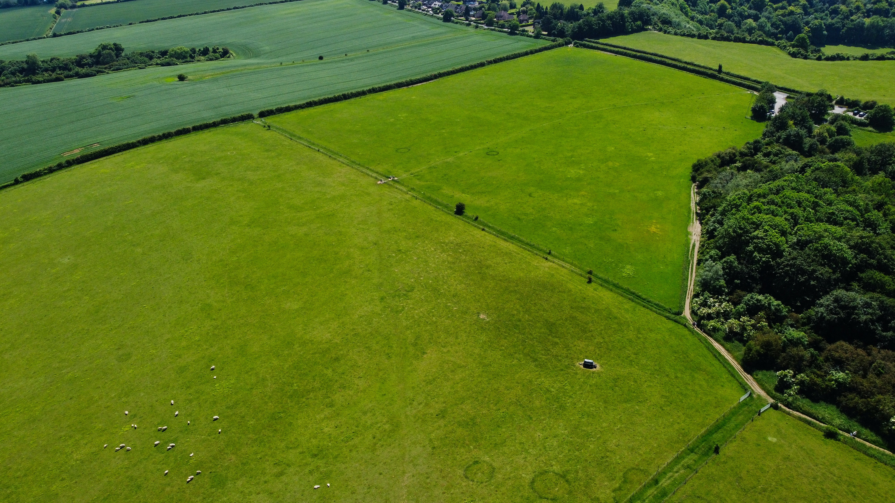

Ir a un Vida Sustentable
Una vida sustentable es más dificil de conseguir debido al Triple Bottom Line
Ir al temaUna explicación sobre la desertificación
Los seres humanos están impulsando la transformación de las tierras secas en desierto a una escala sin precedentes en todo el mundo, con graves consecuencias. Pero hay soluciones.
Ir al tema
¿Donde está el agua en nuestro planeta?
El agua de la Tierra está (casi) en todas partes: por encima de la Tierra en el aire y las nubes y en la superficie de la Tierra en ríos, océanos, hielo, plantas y organismos vivos. ¿Pero sabías que el agua también está dentro de la Tierra
Ir al temaFunciones de diseño sostenible
Centrándose en la calidad ambiental interior para optimizar el rendimiento del edificio y mejorar la productividad, la atención y el bienestar de los empleados.
Ir al tema